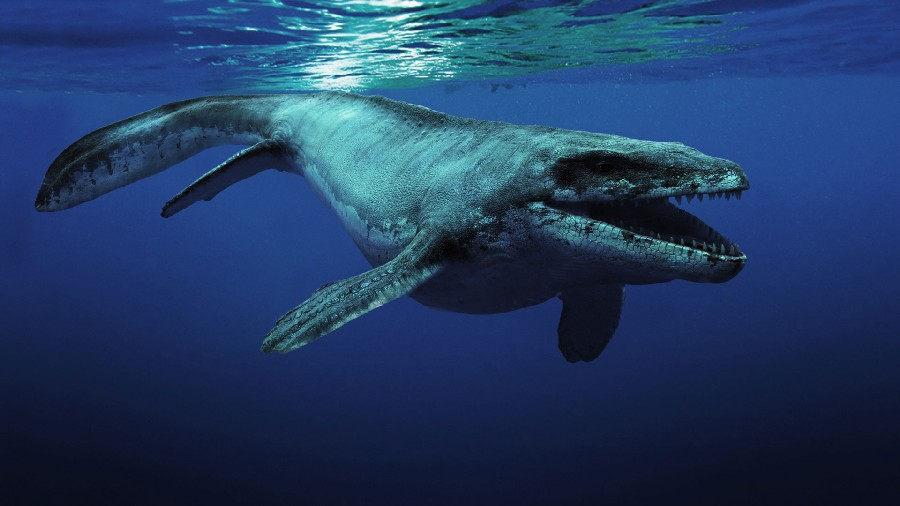

Mosasaur
Back to home page

Dino Data
Height : 49 feet
Lenght : 23 feet
weight : 5000kg
Diet : Fish , Turtles, other small creatures
Play Sound
Interesting facts about Mosasaur
- Mosasaur was a carnivore. It lived in the Cretaceous period and inhabited Europe and North America.
- Its fossils have been found in places such as Centre-Loire Valley (France), South Dakota and Nebraska.
- Existed from Upper Cretaceous Epoch to 61.7 million years ago
- 31 different specimens have been found by paleontologists